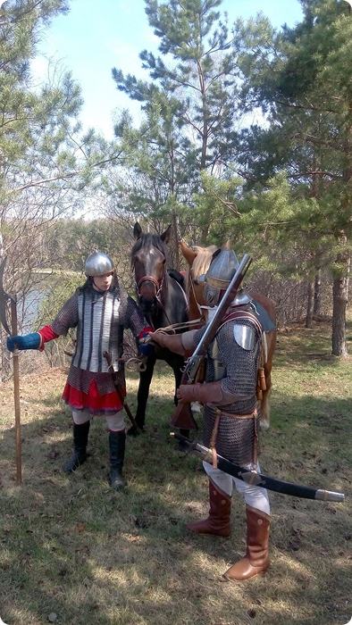

1586 год
На этом “отрезке границы сильно была чувствуема опасность от набегов” - писал один из первых исследователей Сибири П.А.Словцов. Река Пышма поэтому играла исключительно важную роль как пограничная река “домогавшихся похода на Тюмень царевич Алея и Азима с их кочевья проведовать вестей, крепки ли сторожи и карулы”. [Миллер, Г. Ф. История Сибири : [в 2 т.]. [Т.] 1. - Москва ; Ленинград, 1937]
Заселение «припышимья» русскими началось в XVII веке, вскоре после основания первых русских городов на юге Сибири - Тюмени в 1586 году и Тобольска в 1587 году. На тот период река Пышма (Топоним очень сложен. Есть несколько версий происхождения названия. С татарского языка означает спокойная, неторопливая, медлительная) была своеобразным водоразделом между оседлым татарским населением и кочевыми калмыцкими народами, не принимавшими подданство Московскому государству.
1601 год
“В том же 1608 годы нагайские татары под предводительством мурзы Уруса совершили набег на Тюменский уезд и 26 августа подошли к реке Пышме в 20 верстах от города, где и разгромили все русские и татарские жилища.” 3
Нужно иметь в виду следующее: со стороны будущего города Курган - “Царёва городища” на Тобольск проходил караванный торговый путь из Бухары в тогдашнюю столицу Кучумовского царства - Искер. В районе между современными поселками Большие Акияры и Онохино были переправы и купцы из бухары получали разрешение а переправу через Пышму с последующим заходом в Тюмень.
3(Миллер, Г. Ф. История Сибири : [в 2 т.]. [Т.] 1. - Москва ; Ленинград, 1937)
1647 г. не ранее июля 10. — Отписка тюменского воеводы Ивана Тургенева туринскому воеводе Федору Шишкину о прибытии торговых бухарцев и калмыцких послов с торгом от тайшихи „Дарыки и сына ее Ешкепа и от Ирденея конпгайиш и о недовольстве их распоряжением отправить в Тобольск и не разрешать торговать и „пословать” на Тюмени, “Господину Федору Григорьевичи Иван Тургенев челом бьет. В нынешнем во 155-и году июня в 8 день приехал с Пышмы с нижнего караулу тюменской конный казак Безсонко Трубачев, а передо мною в роспросе сказал: идут де на Тюмень торговые бухарцы и калмытские послы с торгом с лошадьми и с коровы н с овнами от Тайчиповы жены Дарыки да сына ее Ешкепа да от Ирдепея коптаиши, послов и торговых людей и кашеваров 32 человека. И того ж числа послал с Тюмени навстречю на Пышму тюменских сына боярского Семена Поскочяна да с ним служилых людей 20 и велел тех калыытцких послов остановить и за Пышму их пущать не велел. И июля в 9 день послал к ним х калмытцким послом за Пышму тюменского сына боярского Сергея Ушакова да съезжей избы подьячево Павла Кирилова да толмача Семейку Трофимова да с -южи служивых людей 10 человек и велел им калматцких послов роспросить, отказать и отговорить, что по государеву цареву и великого князя Алексея Михайловича всеа Русии указу и по тобольской отписке калмыцких послов, на Тюмень принимать не велено; а которые колматцкие послы и станут приходить на Тюмень, и с Тюмени велено их посылать с провожатыми в Тобольск, а на Тюмени им по-словать отнюдь не - велев».4
4(Миллер, Г. Ф. История Сибири : [в 2 т.]. [Т.] 1. - Москва ; Ленинград, 1937)

Кроме того, важно отметить, что враждебная деятельность Кучумовичей вряд ли была бы возможна без поддержки внешних сил. В частности, старшие сыновья Кучума Алей и Канай ориентировались на традиционный союз с ногаями – они оба были женаты на дочерях видных ногайских мурз. Еще в 1601 г. силы Кучумовичей в совокупности насчитывали 450 воинов, в основном из башкир-табынцев и сынрянцев. После присоединения в 1603 г. к Алею ногайского мурзы Уруса их соединенный отряд стал насчитывать уже 1100 человек.2
2 (Васьков Дмитрий Александрович старший преподаватель УрФУ, г. Екатеринбург “ПОТОМКИ КУЧУМА В XVII В. И ИХ РОЛЬ В ОРГАНИЗАЦИИ АНТИРУССКИХ ВЫСТУПЛЕНИЙ НА ЮЖНОМ УРАЛЕ И В ЗАПАДНОЙ СИБИРИ”).
1720 год

Вдоль всей Пышмы, на участке от современной Талицы до впадения ее в Туру было два десятка караулов. Один из самых известных и ближайших к Тюмени, а следовательно старейшим и важнейшим, стоявшим на страже дороги в “Ворота Сибири” был на месте современного Центра “Сибирь”. Четырехсотлетний караул стал называться “Караульной горой” стал немым свидетелем последующих наслоений исторических событий.
По этим историческим записям следует, что историю свою Центр “Сибирь” мог бы смело начинать с 1700 годов с упоминания “Караульной горы” в районе деревни Червишево на картах Семёна Ульяновича Ремезова.
Водяная мельница на реке Пышма
К нашему времени от мельницы остались только торчащие в русле Пышмы сваи. В хорошем состоянии на территории лагеря находятся старинный склад с оригинальным краснокирпичным декором, господский дом на высоком берегу над бывшей запрудой и пруд. Сохранил остатки былой роскоши небольшой парк с вековыми деревьями. Также на территории близлежащего санатория "Сибирь" сохранилась пара жерновов: возможно, они принадлежали Пышминской мельнице. Но жива заимка. Её история включает в себя период с XVIII по XXI века. Многим поколениям полюбилось это место в сосновом бору на красивом берегу реки Пышмы.6
6(https://rayon72.ru/news/history/180928.html).
Несколько лет назад на территории санатория была проведена разведка на предмет нахождения древних артефактов. Организатором мероприятия выступил павел Ситников и под его руководством были найдены интересные исторические находки.
Подлинный размах мельница и поселок получили при купцах Волчихине и Текутьеве в начале ХХ века. Это сооружение - шести этажная мельница с плотиной-мостом, с водосливом - водопадом и деревянным трехметровым водяным колесом. Помимо мельницы на заимке были кузница, кирпичный склад, жилые дома. В начале 20-х годов ХХ века мельницу сожгли. В 1928 году на этом месте устроили пионерский лагерь, названный “Онохинским”. Позже его переименовали в лагерь “Зои Космодемьянской”, а затем в “Алые Паруса”.
На территории Караульной горы найдены остатки керамики
В проектировании здравницы было задействовано пять специализированных научно-исследовательских институтов страны при участии ведущих архитекторов, строителей, ученых и врачей того времени. Тогда планировалось, что “Сибирь” станет закрытым учреждением для партийной элиты.
Выбор местоположения был определен уникальными природными факторами - наличием целебных минеральных вод и сапропелевой грязи, которую можно было добывать рядом, разноуровневым природным ландшафтом, наличием сосновых и березовых лесов, а также возможностью организовать большое чистое озеро прямо на территории санатория.
С местом, где расположен Санаторий "Сибирь", связаны разные легенды. По утверждению некоторых историков, именно в этом месте, где река Пышма огибала Караульную гору, один из первых завоевателей Сибири атаман Ермак Тимофеевич поставил свою заставу. Эта застава долгое время контролировала торговые караваны, идущие с Урала в Сибирь.
Строительство санатория
При строительстве санатория повышенное внимание уделялось качеству используемых материалов и сохранению природы в первозданном виде. Так, при возведении корпусов использовался кирпич из Прибалтики, но один раз строители с целью сокращения сроков сдачи объекта закупили местный строительный материал более низкого качества. Когда курирующие органы узнали об этом, то заставили разобрать все, что было построено из местного кирпича и возвести заново, но уже из прибалтийского кирпича.

1985 год
Михаил Федорович Заварзин, главный врач санатория "Сибирь" (1985-1992).
Как строился санаторий лучше всего послушать из первых уст человека, руководившего стройкой - Михаил Федорович Заварзин, главный врач санатория "Сибирь" с 1985 по 1992 годы.